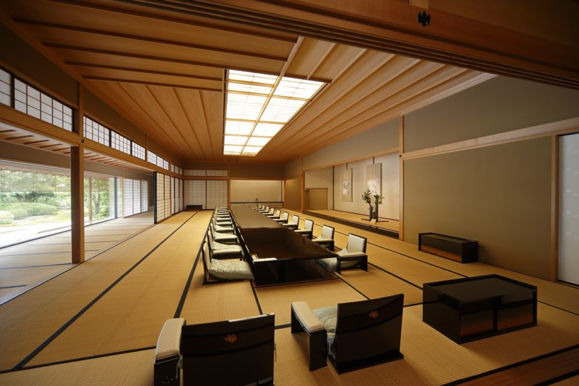
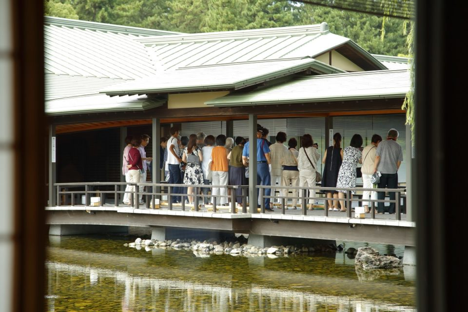
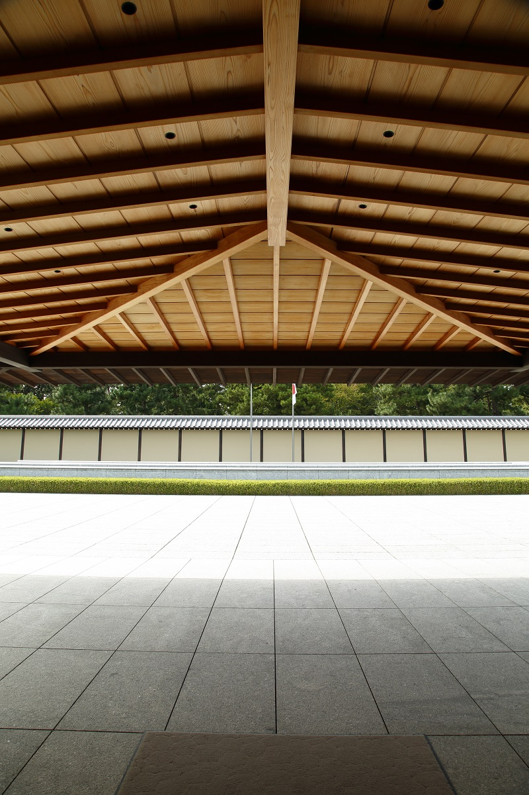
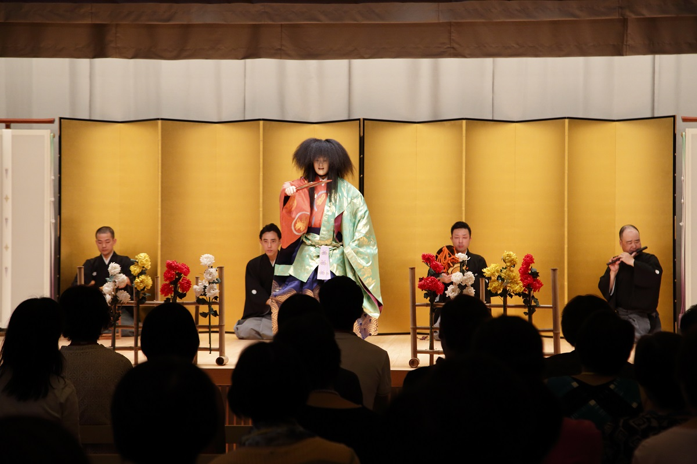
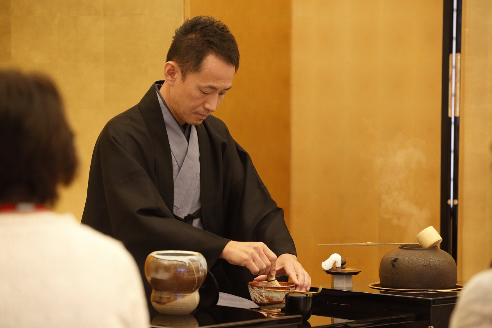
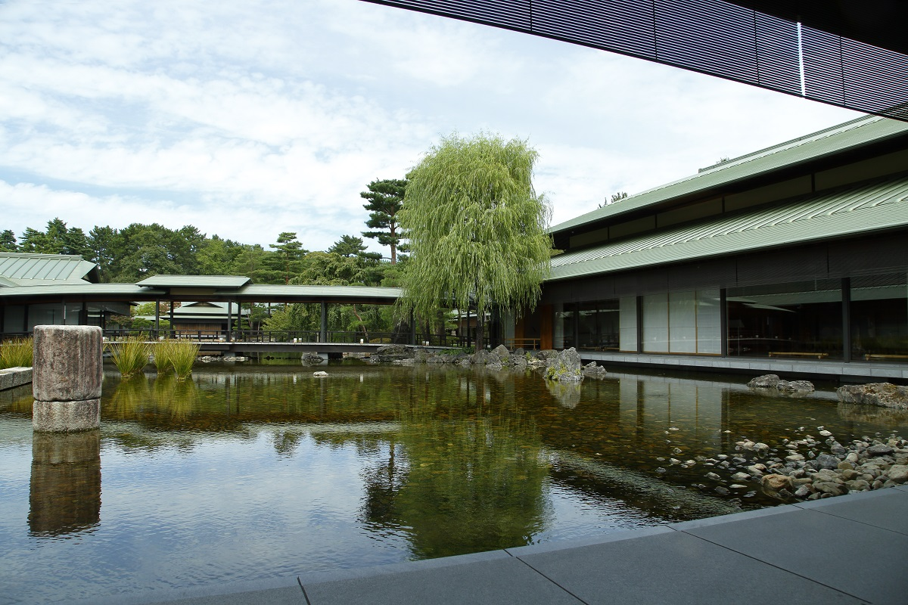
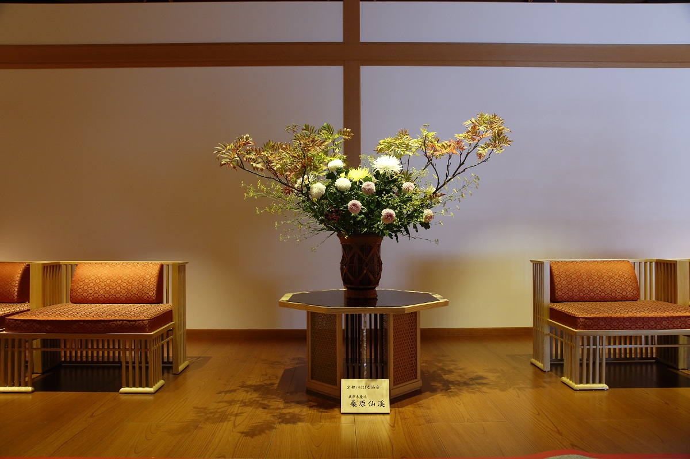
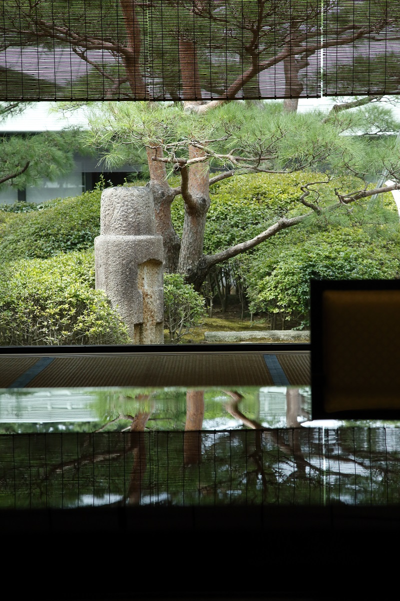
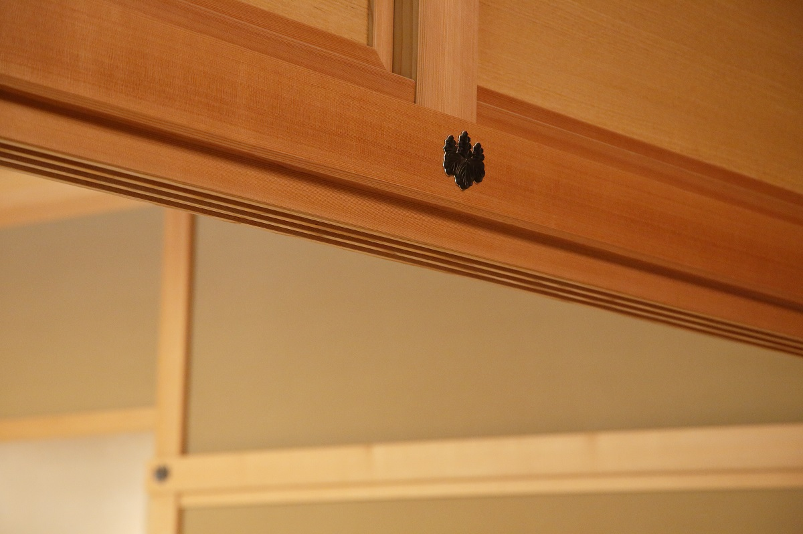

Префектура Киото · Киото · архитектура и ремёсла
Киото Гэйхинкан: дом, где Япония принимает королей и президентов

Когда в Японию приезжают короли, президенты и премьер-министры, их принимают в двух государственных домах. Токийский построен в европейском стиле, а киотский Гэйхинкан целиком японский, и с 2016 года его залы может увидеть каждый.
Что это
Дом приёмов в парке Киото-гёэн
Киото Гэйхинкан стоит в парке Киото-гёэн, на территории старого императорского дворца. Это государственный дом приёмов: здесь устраивают встречи и ужины в честь иностранных гостей высшего ранга. У Японии есть и второй такой дом, Акасака в Токио, но тот похож на европейский дворец. Киотский построен как японская усадьба, и в каждом зале работали мастера традиционных ремёсел.
С июля 2016 года дом открыт для публики круглый год. Посетители проходят по тем же залам, что и главы государств, только без банкетов и церемоний.

Праздник
Один день из жизни почётного гостя
4 сентября 2017 года в Гэйхинкане впервые провели экскурсию с угощением и программой, какие получают иностранные делегации. Желающих оказалось очень много. Стояла поздняя жара, но в воздухе уже чувствовалась осень.
Программу приурочили к Тёё-но сэкку, празднику 9 сентября, который называют ещё праздником хризантем. Гостей встречала входная дверь из цельной доски дзельквы, которой было 700 лет. Когда её створки раскрылись, по обе стороны прохода стояли пышные композиции из хризантем.

Дальше путь вёл в Фудзи-но ма, самый большой зал дома. Здесь проходят ужины для почётных гостей, и первое, что видишь, это тканый настенный гобелен шириной 16,5 м и высотой 3,1 м. В зале есть и сцена. Её двери украшены кирикане, узором из тончайших полосок золотой фольги. Двери медленно раскрылись, зазвучал хор, и начался танец театра но.

Пьеса «Макура Дзидо» рассказывает о мальчике, который пил росу, стекавшую с листьев хризантемы, и прожил 700 лет. Это тоже отсылка к празднику: в день хризантем молятся о долгой жизни. На этой сцене гостям государства показывают но, японский классический танец и другие традиционные искусства.
Чай подавали в большом зале совещаний Юбаэ-но ма. Здесь встречаются министры, а для гостей устраивают чайную церемонию в стиле рюрэй, когда сидят не на полу, а на стульях. Чай заваривали мастера школы Урасэнкэ. К нему подали сладость «Кисэвата». На праздник хризантем цветы накрывают тонкой ватой, а потом обтирают ею тело, чтобы очиститься и прожить долго. Кондитеры повторили этот обычай в сладости.

Кухня, где всё решают секунды
Рядом с японской столовой Кири-но ма находится кухня, сверкающая нержавеющей сталью. Здесь часто готовит шеф третьего поколения киотского ресторана Kinobu.
«О каждом шаге гостей нам сообщают по рации, и кухня работает так, чтобы подать блюдо в точно нужную минуту»
шеф ресторана Kinobu
«Правила работы дома приёмов поразительны. Расстановка людей и расписание до секунды подчинены одному: принять гостя без единой заминки»
шеф ресторана Kinobu
В тот день экскурсию прошли 120 человек, разбитые на группы по 30. Группы ни разу не столкнулись, нигде не скопились, и никому не пришлось ждать.

Ремёсла
Одиннадцать мастерств под одной крышей
Своим нынешним видом Гэйхинкан во многом обязан самим жителям Киото. Они хотели, чтобы дом подходил городу: был построен в японском стиле и опирался на историю и культуру страны. При строительстве работали мастера 11 традиционных ремёсел, от лакового дела до архитектуры сукия и садового искусства. Ещё 14 ремёсел ушло на мебель и утварь, среди них золотая роспись макиэ и перламутровая инкрустация радэн. В этих залах собраны умение и опыт лучших мастеров Японии.

Дом приёмов устроен совсем не как жилой дом. Он рассчитан на иностранных гостей, поэтому всё здесь крупнее обычного, и стены, фусума и сёдзи вышли огромными.
Возьмём глиняные стены. Их ширина такова, что одним движением руки от плеча до плеча не обойдёшься, и всё же каждая стена оштукатурена за один заход, без швов. От этой ровной поверхности захватывает дух. Длинные доски потолка достигают 12 м. Такой материал трудно найти и трудно обработать, но первоклассные мастера раздобыли его и довели дом до конца своим умением и смекалкой.


Мастер, отвечавший за лаковые работы, сказал после завершения строительства:
«Без работы учеников не вырастишь»
мастер лакового дела
Гэйхинкан построили не только для того, чтобы принимать гостей. Он стал и местом, где японские ремёсла передаются следующему поколению.
Киото Гэйхинкан
- Адрес
- префектура Киото, Киото, район Камигё, Киото-гёэн, 23
- Телефон
- +81 75-223-2301 (справочная с оператором), +81 75-223-2302 (автоинформатор)
- Часы работы
- 10:00–17:00
- Выходные
- среда
- Как добраться
- вход через западные ворота
- Сайт
- geihinkan.go.jp
Фото: Кацуро Такасима.